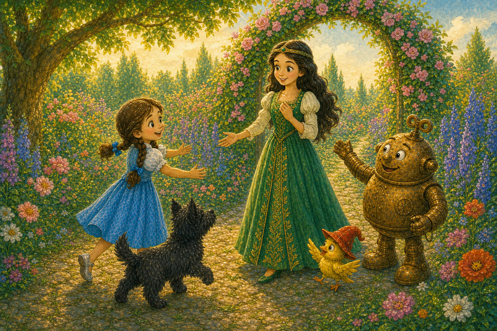
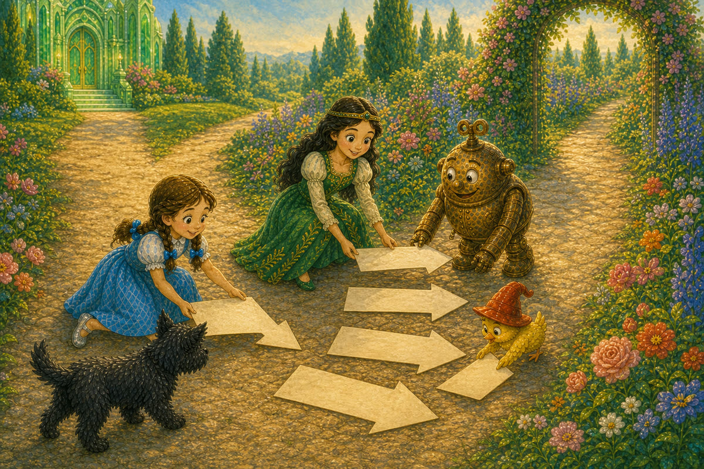
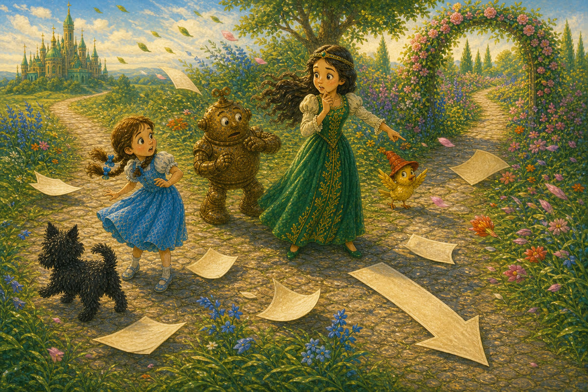
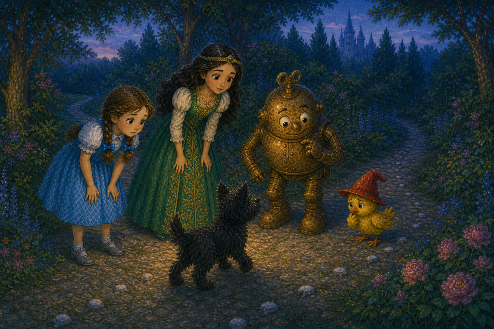
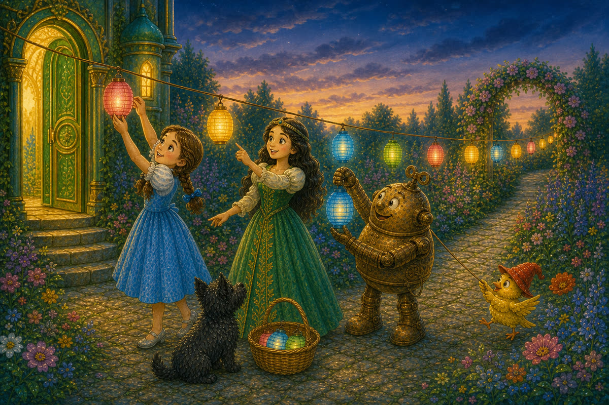
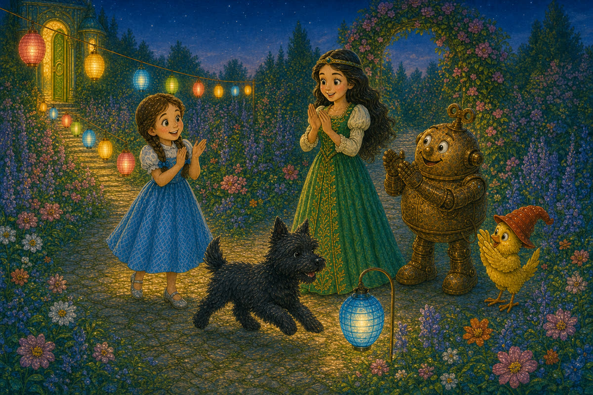
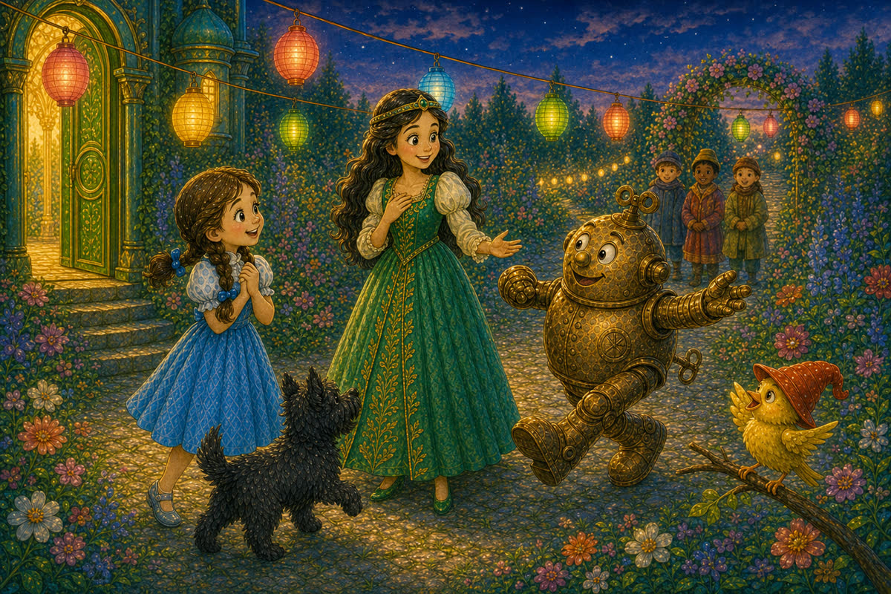

Pahina 1
Isang hapon, dumating si Prinsesa Ozma sa hardin.
Nakasuot siya ng berdeng damit at koronang ginto.
Sinalubong siya ng mga kaibigan.
Isang bagong kuwento sa Lupain ng Oz
Basahin ang tatlong bagong pahina bawat araw. Bago magpatuloy, balikan muna ang mga pahinang nabasa na.

Isang hapon, dumating si Prinsesa Ozma sa hardin.
Nakasuot siya ng berdeng damit at koronang ginto.
Sinalubong siya ng mga kaibigan.
“Darating ang mga bisita sa palasyo mamayang gabi. Kailangan nilang makita ang daan papunta sa hardin,” sabi ni Ozma.
“Tutulungan ka namin,” sabi ni Dorothy.

Una, gumawa sila ng mga palaso mula sa papel.
Inilagay nila ang mga palaso sa daan.
Nakaturo ang lahat sa hardin.

Umihip ang hangin.
Umikot ang mga palaso sa lupa.
Ang isa ay nakaturo sa maling daan.
“Hindi malinaw ang mga palaso,” sabi ni Ozma.
Pagkatapos, inilagay ni Tik-Tok ang mapuputing bato sa tabi ng daan.
Sa hapon, madaling sundan ang mga ito.

Ngunit lumubog ang araw.
Dumilim ang daan.
Mahirap makita ang mababang bato.
Huminto si Toto.
Hindi niya alam kung saan liliko.
“Kailangan natin ng mataas at maliwanag na palatandaan,” sabi ni Ozma.
Naalala ni Dorothy ang mga ilaw sa hardin.
“Mga ilaw ang gamitin natin!”

Nagsabit sila ng mga ilaw mula sa pinto hanggang sa hardin.
Pinili nina Ozma at Dorothy ang tamang lugar.
Tumulong sina Tik-Tok at ang ibon.

Sinubukan ni Toto ang landas.
Nagsimula siya sa pinto.
Sinundan niya ang bawat ilaw hanggang hardin.
Pumalakpak ang mga kaibigan.
Ngunit madilim sa likod ng malaking halaman.
Inilipat ni Ozma ang isang ilaw.
Ngayon, maliwanag na ang buong landas.
Dumating ang mga bisita.
Sinundan nila ang mga ilaw.
Walang naligaw.
Lahat ay nakarating sa hardin.

“Salamat sa inyong tulong,” sabi ni Ozma.
Sa ilalim ng makukulay na ilaw, nagsimula ang salu-salo.
Umawit ang ibon.
Masayang sumayaw si Tik-Tok.
Pag-usapan natin